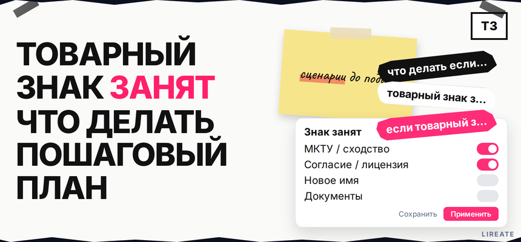
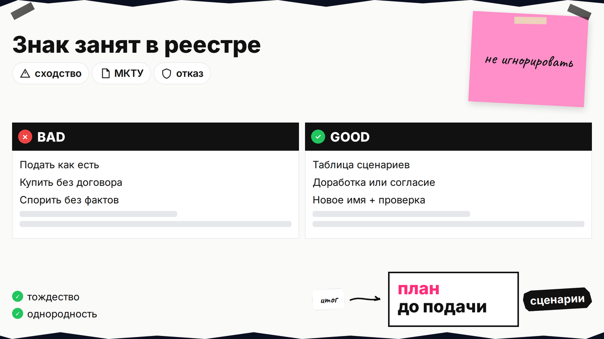
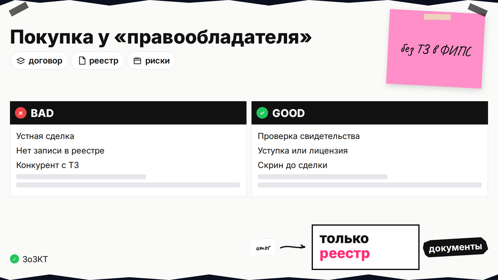

Вы придумали имя, проверили каталог маркетплейса или домен, а в Поисковой платформе Роспатента всплывает чужой знак с тем же словом или похожим логотипом. Вопрос "что делать если товарный знак занят" не решается одним ответом "переименуйтесь": иногда помогает доработка обозначения, другой класс МКТУ, лицензия или письмо-согласие, иногда безопаснее смена бренда. Ниже вы отделите тождество от сходства, сравните сценарии и соберете документы до новой заявки, чтобы не слить пошлину впустую.

TL;DR / Быстрый инсайт: "Занято" в бытовом смысле бывает тождество (то же слово или знак) или сходство до смешения в однородных товарах и услугах по п. 6 ст. 1483 ГК РФ. Сначала проверьте знак в Поисковой платформе и реестре заявок, затем выберите ветку: доработка, сужение классов, лицензия или письмо-согласие, покупка прав с регистрацией перехода, либо новое имя. Договор "купил бренд у ИП" без записи в Роспатенте не заменяет монополию по ст. 1484.
Сигнал "товарный знак занят что делать" приходит из поиска, отказа экспертизы или письма конкурента. Сначала зафиксируйте противопоставление и однородность по МКТУ-13 (2026), затем платите пошлины. Разбор реестров - в чек-листе проверки перед подачей.

МКТУ (Международная классификация товаров и услуг) - это таблица номеров классов, в которых вы заявляете охрану. Экспертиза сравнивает ваш знак с тем, что уже в реестре или подано заявкой, и смотрит, пересекаются ли формулировки товаров и услуг.
Тождество - когда обозначения совпадают или отличаются несущественно. Сходство до смешения - когда потребитель может перепутать знаки по звучанию, смыслу или графике. Конфликт по п. 6 ст. 1483 почти всегда привязан к однородности, а не к "похожему настроению" бренда.
Делайте: проверять и заявки, и действующие знаки. Не делайте: считать знак свободным, если в реестре есть только другой класс, не прочитав перечень однородных услуг (например, розница и оптовая торговля).

| Сценарий | Когда уместен | Риски | Действие |
|---|---|---|---|
| Доработка знака | Слабое сходство, есть отличимый элемент | Экспертиза всё равно может увидеть смешение | Новый макет + повторный поиск |
| Другой класс / сужение перечня | Конфликт только по части товаров | Охрана не покроет реальный ассортимент | Убрать однородные позиции из заявки |
| Лицензия | Нужно использовать чужой знак легально | Договор нужно зарегистрировать в Роспатенте | Лицензионный договор по ст. 1489 ГК РФ |
| Письмо-согласие | Сходство по п. 6, правообладатель согласен | Неотзывно; эксперт может отказать при риске обмана | Подлинник с конкретным перечнем МКТУ |
| Покупка прав | Готовы купить знак или заявку | Сделка без регистрации перехода в реестре | Договор + регистрация перехода в Роспатенте |
| Смена бренда | Сильное тождество, отказ правообладателя | Затраты на упаковку, рекламу, домен | Новое имя + полная повторная проверка |
Схема выбора: поиск в реестре → однородность → сила сходства → переговоры о согласии/лицензии/покупке → если нет - доработка или новое имя → документы → подача заявки
Делайте: сравнить два сценария с учётом пошлин (экспертиза по существу от 13 000 руб. по таблице Роспатента). Не делайте: повторять заявку без изменений после уведомления.
Запрос "если товарный знак не зарегистрировали а купил у другого правообладателя" описывает частую ловушку: продавец владел сайтом, группой или ИП с похожим названием, но не был записан в реестре как обладатель ТЗ. Такая сделка не даёт вам исключительного права и не снимает противопоставление чужого свидетельства.
Делайте: платить за сделку поэтапно, с привязкой к внесению записи в реестр. Не делайте: запускать массовую рекламу под купленным именем, пока не ясен статус в Роспатенте.
Если сценарий "смена бренда" выглядит дешевле бесконечных отказов, заложите время на альтернативное обозначение: другое слово, новый визуальный элемент, отказ от описательной части. Проверьте не только Роспатент, но и домен, соцсети и карточки на маркетплейсах - это не заменяет реестр, но снижает путаницу на рынке.
Делайте: проверять сходство и для слова, и для изображения. Не делайте: добавлять к занятому слову только восклицательный знак или цвет - экспертиза часто видит сходство и так.
Перед пошлинами соберите скрины поиска, таблицу сходства, проект согласия или лицензии, договор отчуждения с регистрацией перехода, перечень МКТУ. PDF уведомления с датой направления храните для сроков ответа.
| Документ | Зачем |
|---|---|
| Выписка из реестра | Подтвердить правообладателя и перечень |
| Письмо-согласие | Основание при сходстве по п. 6 |
| Лицензионный договор | Легальное использование без смены владельца |
| Договор отчуждения + заявление | Покупка знака с записью в реестре |
| Сравнительная таблица | Доводы о несходстве или неоднородности |
Делайте: хранить подлинники согласий - экспертиза может запросить оригинал. Не делайте: подавать заявку с приложением только скана согласия без плана передачи подлинника.
Если мешает чужой знак при вашем более раннем праве, смотрите гайд по возражению: ст. 1493 на экспертизе заявки, ст. 1512 в ППС после регистрации (14 000 руб.). Делайте: оспаривать при заинтересованности. Не делайте: путать с ответом на отказ по своей заявке (9 000 руб.).
Итоговый вердикт: если конфликт сильный и правообладатель не идёт на согласие, смена бренда часто быстрее и дешевле, чем год переписки с экспертизой. Если сходство умеренное и переговоры возможны - начните с письма-согласия или лицензии до повторной подачи.
Нужна помощь с подбором классов и подачей - смотрите сопровождение на странице регистрации товарного знака на Лирейт. Материалы по теме - в рубрике "Товарный знак".
Материал проверен: редакция Лирейт, практика регистрации товарных знаков для малого бизнеса и маркетплейсов.
Достоверность данных: ст. 1483, 1484, 1489, 1493, 1512 ГК РФ и пошлины Роспатента сверены с открытыми текстами на 29.10.2026. Показы Яндекс Вордстат по primary query в среде подготовки не запрашивались.
Иногда да: при несходстве до смешения, неоднородных товарах или письменном согласии правообладателя по п. 6 ст. 1483. Похожее слово в том же классе с тем же ассортиментом чаще блокируют.
Разделите словесную и изобразительную части: зарегистрируйте слово отдельно или с другим рисунком. Если чужой комбинированный знак сходен целиком, одной смены шрифта может быть мало - сделайте новый поиск по изображению.
Нет для монополии на обозначение: исключительное право возникает у того, кто указан в реестре. Договор без регистрации перехода или лицензии не защитит от претензии правообладателя из свидетельства.
Фиксированной суммы нет: считайте упаковку, вывески, домен, рекламные кабинеты, маркировку на маркетплейсах и повторную регистрацию ТЗ. Сравните смету ребренда с пошлинами и сопровождением повторной заявки.
Иногда да, но однородность шире номера класса. Проверьте перечень позиций: услуги доставки и торговля товаром могут конфликтовать даже при разных номерах.
Согласие при готовности сторон часто занимает недели; оспаривание по ст. 1512 - месяцы и 14 000 руб. без гарантии отмены регистрации. Выбор зависит от силы ваших прав и бюджета.
Да, полный цикл поиска по каждому финальному варианту. Ошибка на этом шаге снова приведёт к уведомлению и потере времени на экспертизе.